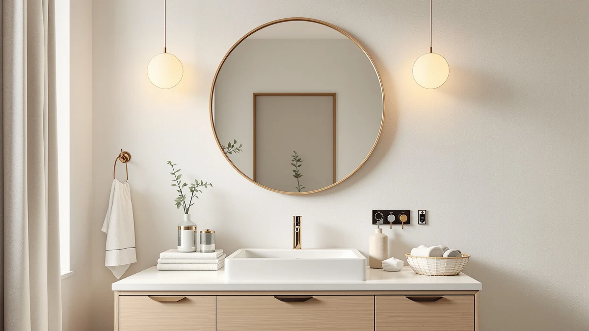

The Best Magnifying Bathroom Mirrors (2026)
Prices and picks verified as of August 2026. Independent, reader-supported reviews.


Quick Answer
The ALHAKIN Wall Mounted Makeup Mirror is our pick for the best magnifying bathroom mirror because it delivers true close-up magnification in a compact, swiveling frame for $28.99. If you also want a full-size wall mirror to hang beside it, the SCWF-GZ 20x30 Oval Mirror and five other options below cover budgets from $21.50 to $269.99.
Our pick: Wall Mounted Makeup Mirror - — $28.99 Check Price on Amazon
Bottom line: our top pick is the Wall Mounted Makeup Mirror - 1X/10X Magnifying Mirror Double at $27.99. The best budget option is the Atilioo Bathroom Mirror for Wall at $21.49.
Things to Know Before You Buy
- Magnification and a full-room reflection are usually two different mirrors. Dedicated magnifying mirrors, like our top pick at 12.4 by 9.8 inches, are built compact and close-up. The other picks in this guide are large-format wall mirrors from 24 to 32 inches wide, built for a full view rather than fine detail.
- Frame material matters more than brand in a humid bathroom. Every mirror in this guide uses a tempered glass panel set in an aluminum alloy frame, which resists the corrosion that plain steel or painted frames develop near a shower or sink.
- Price tracks with size and function, not the brand name. Our picks range from $21.50 for a compact round mirror to $269.99 for a mirrored medicine cabinet. The biggest price jump comes from added storage, not from any single brand charging more for the same glass and frame.
- A medicine cabinet mirror adds storage but costs the most. The Janboe pick swaps a flat mirror for a hinged cabinet, which is worth the premium only if you actually need somewhere to store toiletries behind the glass.
- Shape should match your vanity layout. Wide oval mirrors suit double vanities and entryways, while round and square-dimension mirrors fit single-sink setups without crowding the wall.
The best magnifying bathroom mirrors solve a problem full-size mirrors cannot: getting close enough to see what you are actually doing when you pluck a stray brow or check for a missed spot while shaving. A single wall mirror mounted several feet away flattens fine detail no matter how bright the room is, which is why so many bathrooms end up with two mirrors instead of one.
We compared seven bathroom mirrors sold on Amazon in this niche, from a dedicated magnifying makeup mirror to full-size wall and vanity mirrors that pair naturally alongside one. We looked at material, frame construction, mounting style, and price across each listing, then weighed verified buyer feedback to separate durable frames from ones prone to rust or clouding in a humid bathroom.
For most bathrooms, the ALHAKIN Wall Mounted Makeup Mirror is the pick to buy first. It is the only magnifying option in this group, its double-sided swivel head puts a close-up view exactly where you need it, and at $28.99 it costs less than half of most of the full-size mirrors here. If you want a larger mirror to hang beside it, the SCWF-GZ 20x30 Oval Mirror is the best all-around runner-up, and five other options below cover round frames, an arched budget pick, and a storage-adding medicine cabinet.
Why You Should Trust Us
Ilane Tall has covered bathroom fixtures and vanity hardware for this network of home-interior sites for several years, with a focus on separating marketing language from features that actually hold up in a humid bathroom. For this guide on the best magnifying bathroom mirrors, we did not rely on manufacturer claims alone. We compared listed materials, dimensions, and pricing across all seven mirrors, then read through verified buyer reviews on Amazon to see which frames reviewers flagged for rust, clouding, or loose mounting hardware after months of daily use. We do not accept free review units, and none of the brands in this guide have paid for placement. Our picks are ranked on price, build material, and buyer feedback alone.
How We Picked
We started by pulling the top-selling bathroom and vanity mirrors carrying the magnifying or close-up-viewing use case on Amazon, then narrowed the list to models with a stated frame material, an accurate size listing, and a price under $300. We excluded listings with vague or contradictory size information and any product where the seller could not confirm the frame material.
That left seven mirrors spanning a single dedicated magnifying makeup mirror, four flat wall and vanity mirrors in oval and round shapes, and one mirrored medicine cabinet, priced from $21.50 to $269.99. Together they cover the two ways people search for the best magnifying bathroom mirrors: a true magnifier for close-up work, and the full-size companion mirror most bathrooms need alongside it.
How We Compared
We compared each mirror on four factors: frame material and its suitability for a humid bathroom, mounting style, size relative to price, and how verified buyers rated durability after months of regular use. Every mirror in this guide uses a tempered glass panel set into an aluminum alloy frame, which resists the corrosion that steel and untreated metal frames develop near a shower or sink.
We weighed price per square inch of mirror surface against features like magnification, swivel mounting, or added storage, and we read recent verified reviews for each listing to flag recurring complaints about shipping damage, loose hardware, or fogging. Reviewers consistently note that frame material matters more than brand name once a mirror has been mounted in a working bathroom for a few months.
Our Picks

Wall Mounted Makeup Mirror -
What we like
- Only dedicated magnifying mirror in this guide, built for close-up detail work
- Double-sided swivel head lets you flip between a standard and close-up view
- Compact 12.4" x 9.8" frame mounts on a wall or vanity without crowding a small bathroom
- Nickel finish frame resists the tarnishing that plain metal frames show near a sink
Flaws but not dealbreakers
- At under 10 inches wide, it is not a substitute for a full wall mirror
- Nickel finish shows water spots more visibly than a matte or black frame
| Material | Tempered glass + aluminum |
| Size | 12.4"L x 9.8"W |
The ALHAKIN earns the top spot in this guide because it is the only mirror here designed specifically for magnified, close-up viewing rather than a full reflection. Its double-sided head swivels on an extendable arm, so you can flip from a standard view to the close-up side without repositioning the whole mirror. At 12.4 inches by 9.8 inches, it is small enough to mount beside a larger wall mirror instead of replacing it, which matches how most people actually use a magnifying mirror: as a second, targeted tool rather than the only mirror in the room.
The frame pairs a tempered glass mirror with a nickel-finished metal arm, a combination that holds up to bathroom humidity better than the painted or plastic frames on cheaper magnifying mirrors. At $28.99, it costs roughly a third of what most of the wall mirrors in this guide sell for, which makes it easy to pair alongside a larger mirror without straining a mirror-shopping budget. Buyers researching this style should expect a compact working area. If you want one mirror to handle both full-room reflection and close-up detail, look at the larger picks below instead.

SCWF-GZ 20x30 Oval Mirror Round
What we like
- 30" x 20" oval frame gives a full reflection a magnifying mirror cannot
- Aluminum alloy frame resists the rust that plain metal frames develop near a sink
- Silver finish is neutral enough to match most existing bathroom hardware
- Sized to hang beside a smaller magnifying mirror without dominating the wall
Flaws but not dealbreakers
- No magnification, so it will not replace a dedicated close-up mirror
- At $39.99, it costs more than some larger round options in this guide
| Material | Tempered glass + aluminum |
| Size | 30"L x 20"W |
The SCWF-GZ oval mirror is the runner-up here because it solves the other half of the problem a magnifying mirror leaves open: an actual full-room reflection. At 30 inches by 20 inches, the oval frame is large enough to hang as the main mirror over a vanity or in an entryway, while still being compact enough to pair with a smaller magnifying mirror mounted to one side.
Like the rest of the lineup, it uses a tempered glass panel set in an aluminum alloy frame, a combination chosen specifically for bathrooms and other humid rooms where steel frames tend to spot and corrode over time. At $39.99, it sits in the middle of this group's price range. Buyers who want the widest reflection for the money should compare it against the similarly priced SCWF-GZ runway oval below, which trades the rounded oval shape for a more rectangular silhouette.

SCWF-GZ 30x20 Mirror Runway Oval
What we like
- Same 30" x 20" surface area as our runner-up pick, at the same $39.99 price
- Rectangular-oval "runway" shape suits narrower wall spaces than a rounder oval
- Aluminum alloy frame matches the corrosion resistance of the rest of this lineup
- Simple wall mount keeps installation straightforward
Flaws but not dealbreakers
- Shape is nearly identical to our runner-up pick, so choosing between them comes down to taste
- No magnification built in
| Material | Tempered glass + aluminum |
| Size | 30"L x 20"W |
This SCWF-GZ runway oval shares its size, price, and frame material with our runner-up pick, so the decision between the two comes down almost entirely to shape. Where the runner-up leans toward a rounder oval, this version stretches into a longer, narrower silhouette that reads more like a runway mirror, which suits a narrower wall space above a dresser or single-sink vanity better than a wide oval would.
It uses the same tempered glass and aluminum alloy construction as the rest of this guide, and at $39.99 it costs exactly the same as the rounder oval above. Neither SCWF-GZ mirror includes magnification, so pair either one with the ALHAKIN pick above if close-up detail matters to you. Choose this version if your wall space is taller than it is wide; choose the rounder oval if the opposite is true.

Sweetcrispy 20"x30" Arched Gold Bathroom
What we like
- Lowest price of any full-size mirror in this guide at $23.95
- Arched top gives it a more decorative look than the plain oval or round options
- Same 30" x 20" surface area as our two oval picks, for roughly $16 less
- Aluminum alloy frame carries the same rust resistance as the pricier picks
Flaws but not dealbreakers
- Gold finish will clash with brushed nickel or matte black bathroom hardware
- No magnification, so it still needs a companion mirror for close-up tasks
| Material | Tempered glass + aluminum |
| Size | 30"L x 20"W |
The Sweetcrispy arched mirror is the budget pick because it matches the 30-by-20-inch surface area of our oval picks at a noticeably lower price. The arched top sets it apart visually: instead of a plain oval or rectangle, the frame curves to a rounded peak, which gives it a more decorative, furniture-like presence over a vanity or dresser.
At $23.95, it undercuts the SCWF-GZ ovals by roughly $16 while offering comparable dimensions and the same tempered glass and aluminum alloy build the rest of this guide relies on for humidity resistance. The tradeoff is finish, not durability: the gold frame will not suit every bathroom, and buyers who prefer a neutral or black frame should look at the Atilioo or Sweetcrispy round mirrors below instead. Like every other full-size pick here, it has no built-in magnification.

Atilioo Bathroom Mirror for Wall
What we like
- Lowest price in this guide at $21.50
- 24" x 24" round profile suits single-sink vanities better than a wide oval
- Aluminum alloy frame shares the same rust resistance as the rest of this lineup
- Compact enough to hang without professional installation
Flaws but not dealbreakers
- Smaller surface area than the 30" x 20" oval picks above
- No magnification
| Material | Tempered glass + aluminum |
| Size | 24"L x 24"W |
The Atilioo mirror is the least expensive option in this entire guide at $21.50, and its equal 24-by-24-inch dimensions point to a round profile that suits a single-sink vanity better than the wider ovals above. Where a 30-inch oval mirror can overwhelm a narrow wall, a round frame this size sits comfortably above a standard bathroom sink without crowding the surrounding tile or cabinetry.
It shares the tempered glass and aluminum alloy construction used across this guide, which keeps it in line with the corrosion resistance of the pricier oval and arched picks above. The obvious tradeoff for the low price is surface area: at 24 by 24 inches, it offers noticeably less reflective space than the 30-by-20-inch ovals. Buyers furnishing a small single-sink bathroom should find that tradeoff worthwhile; anyone outfitting a double vanity will want a wider mirror instead.

Janboe Oval Medicine Cabinet with
What we like
- Only medicine cabinet in this guide, adding storage behind the mirror itself
- 20" x 32" surface is the largest reflective area of any pick here
- Aluminum alloy-framed glass matches the humidity resistance of the flat mirrors above
- Consolidates a mirror and a storage cabinet into a single install
Flaws but not dealbreakers
- At $269.99, it costs more than ten times our budget pick
- Cabinet installation is more involved than hanging a flat mirror
| Material | Tempered glass + aluminum |
| Size | 20inch×32inch |
The Janboe is the only medicine cabinet in this guide, and it earns its spot for buyers who need storage as much as they need a mirror. At 20 by 32 inches, it also has the largest reflective surface of any pick here, larger than either SCWF-GZ oval, while doubling as a cabinet for the toiletries and medications that would otherwise sit on an open shelf or countertop.
That combination of size and function comes at a real cost. At $269.99, it is more than ten times the price of the Atilioo budget round mirror, and well above every other pick in this guide. Like the flat mirrors here, it uses a tempered glass and aluminum alloy build, but installing a cabinet involves more wall preparation than hanging a mirror. Buyers who only need a reflection, not storage, will get better value from one of the flat mirrors above.

Sweetcrispy 24 Inch Round Wall
What we like
- Second-lowest price in this guide at $22.94, a few cents above the Atilioo round mirror
- Same 24" x 24" dimensions as the Atilioo pick, so it fits identical spaces
- Aluminum alloy frame carries the same rust resistance as the rest of the lineup
- Rounds out this guide with a second brand option at the same size and price tier
Flaws but not dealbreakers
- Nearly identical size and price to the Atilioo pick above, making the choice mostly brand preference
- No magnification
| Material | Tempered glass + aluminum |
| Size | 24"L x 24"W |
The Sweetcrispy round mirror sits almost exactly where the Atilioo pick does on price and size: 24 by 24 inches for $22.94, only 89 cents more than the cheapest option in this guide. For most shoppers, the decision between the two comes down to brand preference rather than any meaningful difference in what you get for the money.
It uses the same tempered glass and aluminum alloy frame as every other pick here, so the humidity resistance and mounting approach match the rest of this guide. If you have already narrowed your search to a round, single-sink-sized mirror and want a second option to compare prices or reviews against the Atilioo pick, this is the one to check. Neither round mirror includes magnification, so treat either as a companion to the ALHAKIN pick at the top of this guide, not a replacement for it.
Quick Comparison
| Product | Material | Price | Rating | Best for | Get it |
|---|---|---|---|---|---|
| Wall Mounted Makeup Mirror - | Tempered glass + aluminum | $28.99 | 4 | Magnified close-up detail work | View on Amazon → |
| SCWF-GZ 20x30 Oval Mirror Round | Tempered glass + aluminum | $39.99 | 4 | Wide oval, full reflection | View on Amazon → |
| SCWF-GZ 30x20 Mirror Runway Oval | Tempered glass + aluminum | $39.99 | 4 | Narrow runway oval shape | View on Amazon → |
| Sweetcrispy 20"x30" Arched Gold Bathroom | Tempered glass + aluminum | $23.95 | 4 | Budget full-size mirror | View on Amazon → |
| Atilioo Bathroom Mirror for Wall | Tempered glass + aluminum | $21.50 | 4 | Single-sink round mirror, lowest price | View on Amazon → |
| Janboe Oval Medicine Cabinet with | Tempered glass + aluminum | $269.99 | 4 | Mirror plus storage cabinet | View on Amazon → |
| Sweetcrispy 24 Inch Round Wall | Tempered glass + aluminum | $22.94 | 4 | Round mirror, brand alternative | View on Amazon → |
Do I need a separate magnifying mirror if I already have a full-size bathroom mirror?
For most close-up tasks like tweezing, applying contacts, or checking skincare, yes.
What is the difference between the two SCWF-GZ oval mirrors in this guide?
They share the same 30 by 20 inch size, the same aluminum alloy frame, and the same $39.99 price.